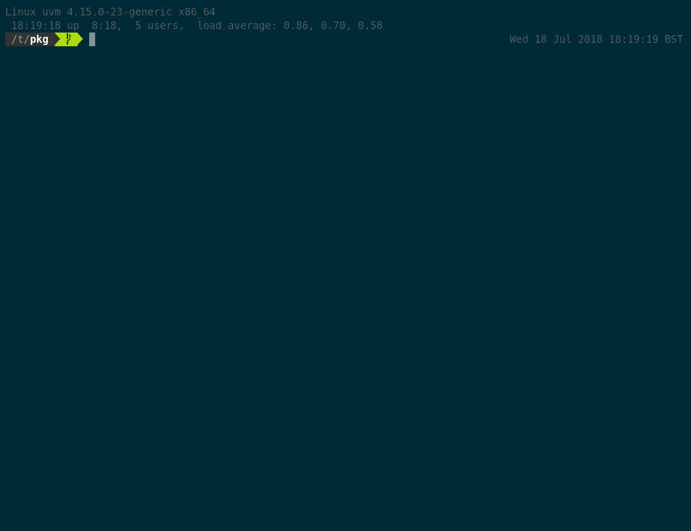
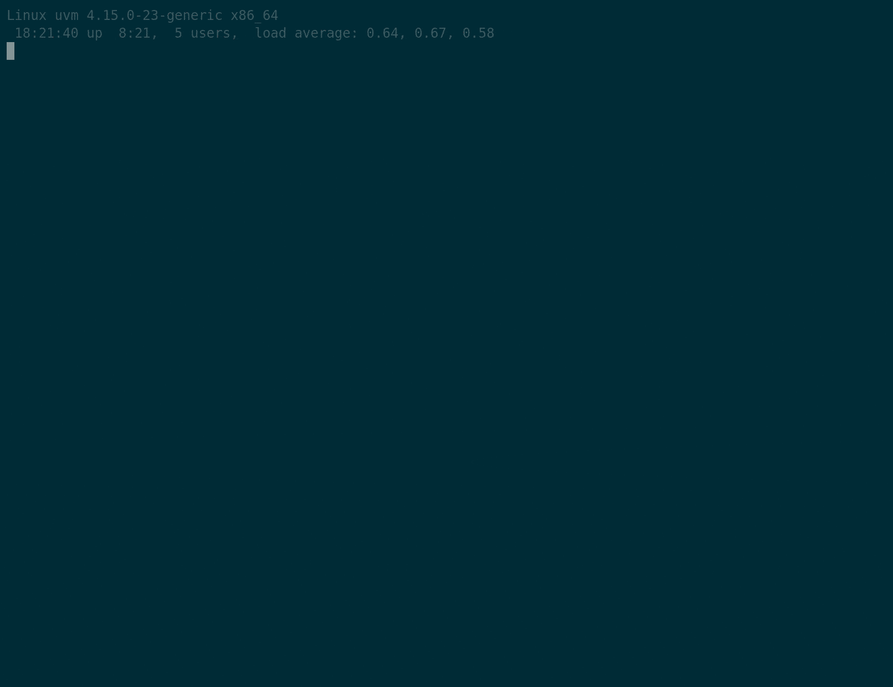
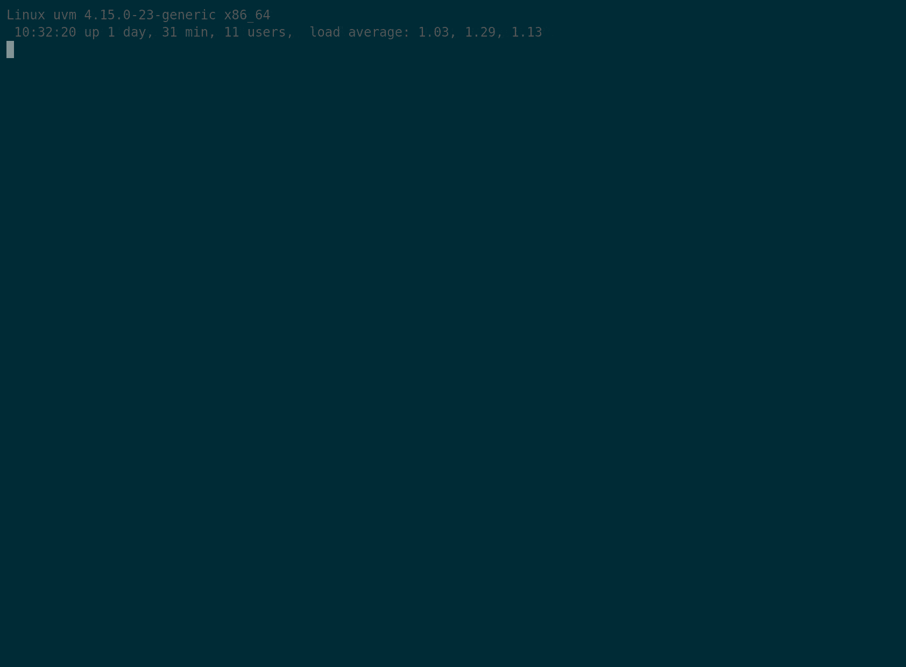
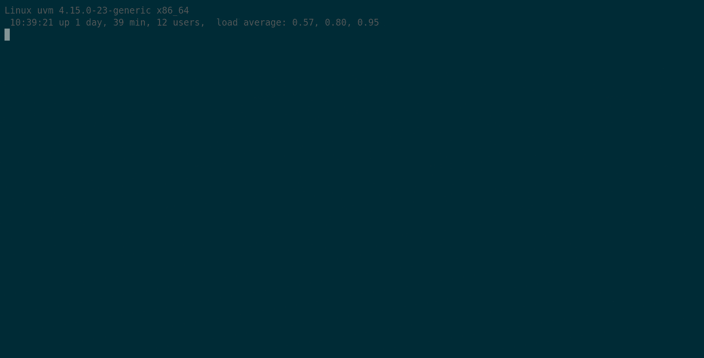
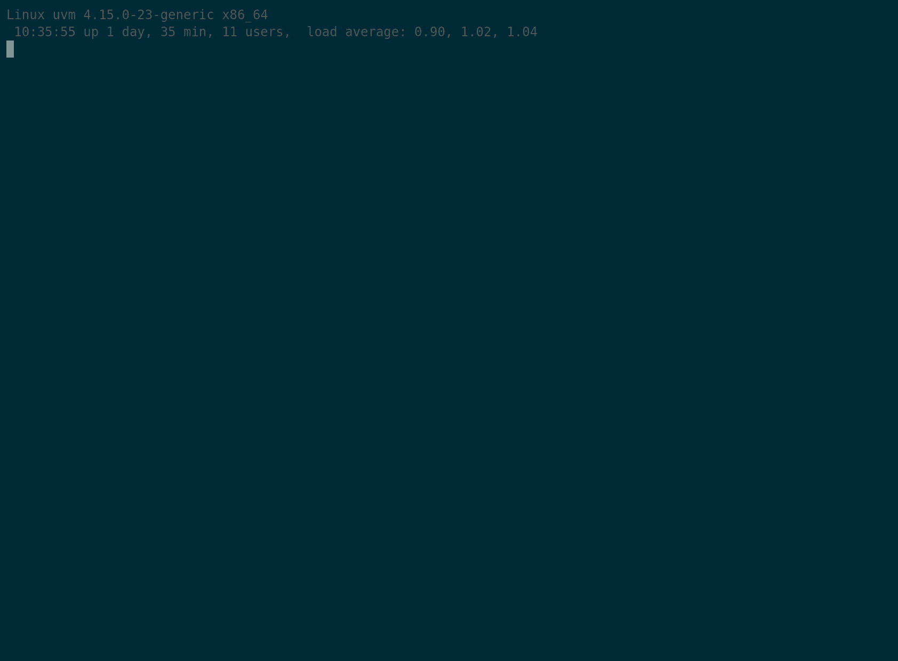
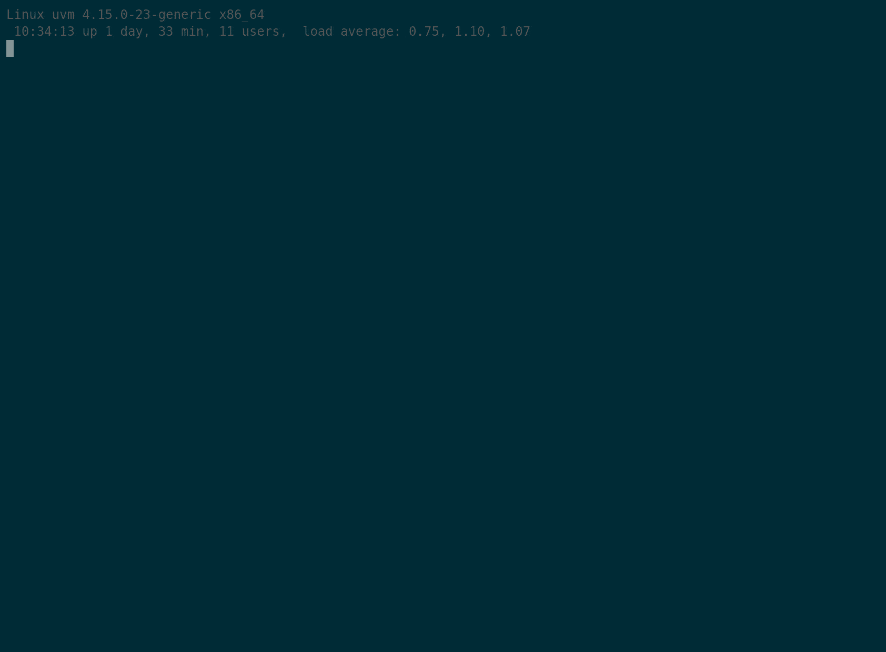
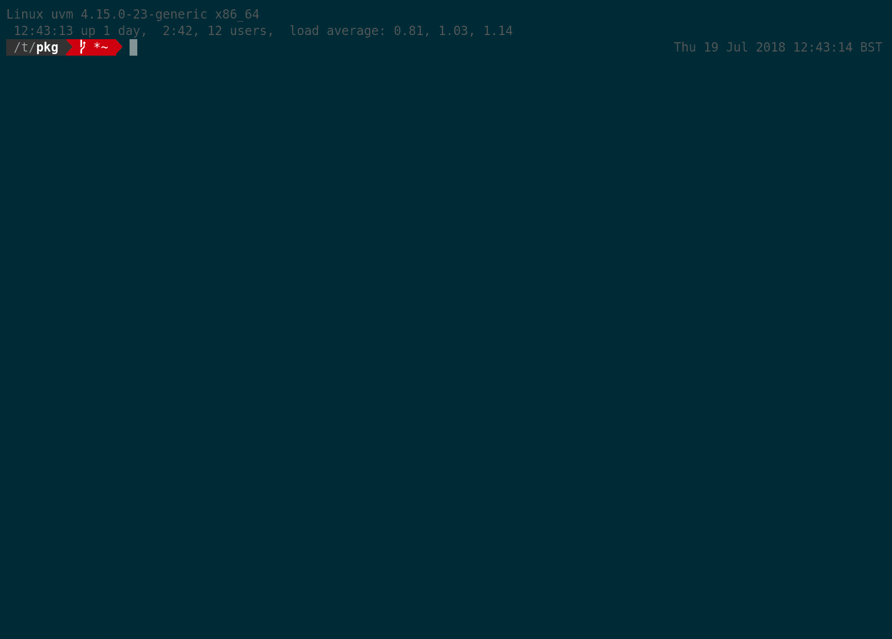
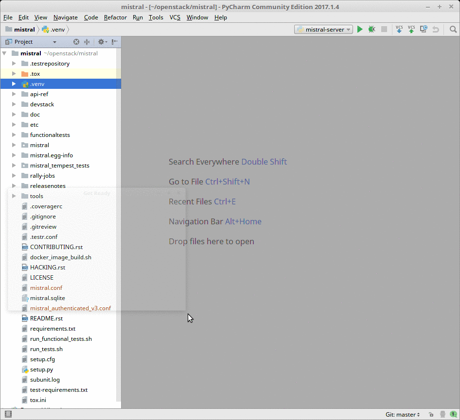
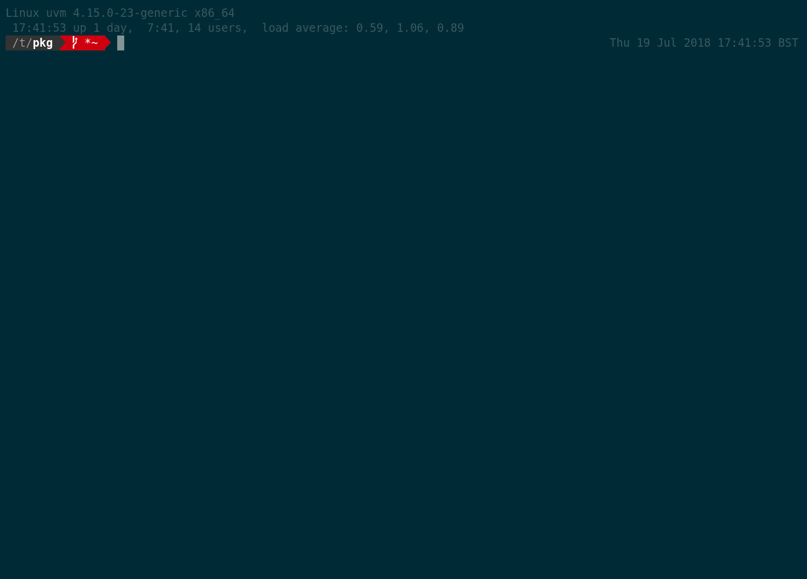
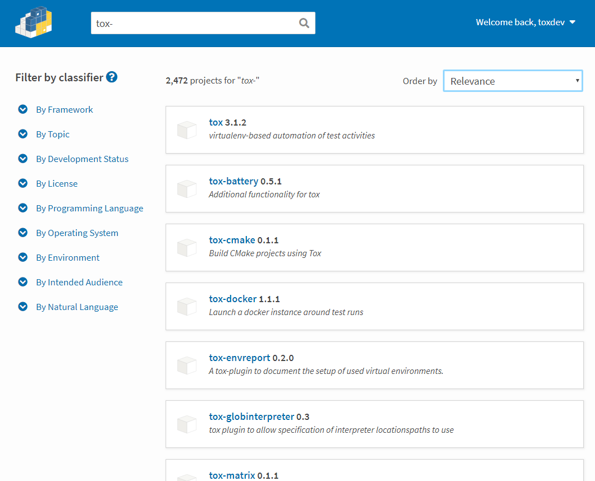

Standardize Testing in Python
tox primer
by Bernat Gabor /
@gjbernat /
bernat.tech /
Bloomberg
Why do I need this?
elements of a Python app/library
- business logic 😎
- tests - unit and integration
- packaging
- documentation
- type checks
- static code analysis/style checks
- support multiple Python versions
- support multiple versions of dependencies
- quickly set up DEV environment
😱 assure QC for each after every commit!!! 😱
wait, we have a tool for that! 💡
- tests: pytest, nosetest, nose2, etc.
- packaging
- library: setuptools, flit, poetry
- application: PEX, XAR
- documentation generation: sphinx, mkdocs
- static code analysis/style checks: black, flake8, pylint
- multiple Python versions: virtualenv, pyenv, pipenv, etc.
- multiple versions of dependencies: virtualenv, pyenv, pipenv, etc.
make sure to invoke all those, after each commit 😢
😞 however 😞
- every tool has its own interface
- steep learning curve for someone new to the project
- triggering the reaction of
How to improve on that?
- Create a CONTRIBUTING file detailing each tool
- Write a shell script that invokes all of those
- Write a makefile
Writing a shell script
run_it_all.bash
set -x # stop if any of these fails
python3.7 setup.py sdist # package it
python3.7 install . # test packaging
python3.7 -m pytest # run unit test
python3.7 -m mypy # run type checker
python3.7 -m flake8 # run code style check
sphinx-build doc/conf.py -d build # generate documentation
Reasonable. However, now it would be nice to:
- to add virtual environments to it
- run all checks regardless, and print report
- run checks in parallel
Writing a shell script
venv - virtualenv
- added in Python 3.3 (backported to Python 2.7)
- support for creating lightweight “virtual environments” with their own site directories
Writing a shell script
venv - virtualenv
usage by activate/deactivate:
python -m venv env # create virtual environment
./env/bin/activate # activate virtual env
pip install -r requirements.txt # install dependencies
python -m pytest # call pytest
deactivate # deactivate
you can also directly use these:
python -m venv env # create virtual environment
./env/pip install -r requirements.txt # install dependencies
./env/python -m pytest # call pytest
Writing a shell script
run_it_all.bash
set -x # stop if any of these fails
python3.7 -m virtualenv py27 # create venv
./py27/bin/activate # activate venv
python setup.py sdist # package it
python install . # test deploy
python -m pytest # run unit test
python -m pylint # run static code analysis
python -m flake8 # run code style check
sphinx-build doc/conf.py -d build # generate documentation
deactivate # deactivate
that starts to be hard to:
- read - progress reporting?
- maintain
- it looks error prone (e.g. always deactivate virtual environment)
- and it's just one Python version defined
- while supporting one platform
there must be a better way
tox
merge CI and shell-based testing
https://tox.readthedocs.org
tox
allows for a Python project:
- to define all tools in one place
- with their configuration
- while having a central way of invoking each of them
- inside an isolated and reproducible environment.
tox - what it is
- python cli tool:
- install via:
- pip install tox
- invoke via:
- python -m tox
- tox
- install via:
- manage, create and run reproducible test environments
how it works
flow diagram
to see phases and their output details:
tox -rvv

configuration
[tox]
envlist = py27, lint, doc
[testenv]
basepython = py27: python2.7
lint: python3.7
doc: python3.7
publish: python3.7
commands = pytest {posargs}
deps = pytest >= 3.0.0
pytest-cov
[testenv:lint]
deps = pylint >= 2.0.0
commands = pylint -r n --disable=similarities src tests {posargs}
[testenv:doc]
deps = Sphinx
commands = sphinx-build -v -W -b html -a doc/source {toxinidir}/build/doc
[testenv:publish]
deps = setuptools
twine
commands = python setup.py sdist bdist_wheel
twine upload build/*
configuration
[tox]
envlist = py27, lint, doc
[testenv]
basepython = py27: python2.7
lint: python3.7
doc: python3.7
publish: python3.7
commands = pytest {posargs}
deps = pytest >= 3.0.0
pytest-cov
[testenv:lint]
deps = pylint >= 2.0.0
commands = pylint -r n --disable=similarities src tests {posargs}
[testenv:doc]
deps = Sphinx
commands = sphinx-build -v -W -b html -a doc/source {toxinidir}/build/doc
[testenv:publish]
deps = setuptools
twine
commands = python setup.py sdist bdist_wheel
twine upload build/*
configuration
[tox]
envlist = py27, lint, doc
[testenv]
basepython = py27: python2.7
lint: python3.7
doc: python3.7
publish: python3.7
commands = pytest {posargs}
deps = pytest >= 3.0.0
pytest-cov
[testenv:lint]
deps = pylint >= 2.0.0
commands = pylint -r n --disable=similarities src tests {posargs}
[testenv:doc]
deps = Sphinx
commands = sphinx-build -v -W -b html -a doc/source {toxinidir}/build/doc
[testenv:publish]
deps = setuptools
twine
commands = python setup.py sdist bdist_wheel
twine upload build/*
configuration
[tox]
envlist = py27, lint, doc
[testenv]
basepython = py27: python2.7
lint: python3.7
doc: python3.7
publish: python3.7
commands = pytest {posargs}
deps = pytest >= 3.0.0
pytest-cov
[testenv:lint]
deps = pylint >= 2.0.0
commands = pylint -r n --disable=similarities src tests {posargs}
[testenv:doc]
deps = Sphinx
commands = sphinx-build -v -W -b html -a doc/source {toxinidir}/build/doc
[testenv:publish]
deps = setuptools
twine
commands = python setup.py sdist bdist_wheel
twine upload build/*
configuration
[tox]
envlist = py27, lint, doc
[testenv]
basepython = py27: python2.7
lint: python3.7
doc: python3.7
publish: python3.7
commands = pytest {posargs}
deps = pytest >= 3.0.0
pytest-cov
[testenv:lint]
deps = pylint >= 2.0.0
commands = pylint -r n --disable=similarities src tests {posargs}
[testenv:doc]
deps = Sphinx
commands = sphinx-build -v -W -b html -a doc/source {toxinidir}/build/doc
[testenv:publish]
deps = setuptools
twine
commands = python setup.py sdist bdist_wheel
twine upload build/*
configuration
[tox]
envlist = py27, lint, doc
[testenv]
basepython = py27: python2.7
lint: python3.7
doc: python3.7
publish: python3.7
commands = pytest {posargs}
deps = pytest >= 3.0.0
pytest-cov
[testenv:lint]
deps = pylint >= 2.0.0
commands = pylint -r n --disable=similarities src tests {posargs}
[testenv:doc]
deps = Sphinx
commands = sphinx-build -v -W -b html -a doc/source {toxinidir}/build/doc
[testenv:publish]
deps = setuptools
twine
commands = python setup.py sdist bdist_wheel
twine upload build/*
flow diagram
packaging
-
if not an application, create an installable package
python setup.py sdist - build dependencies: same Python used as the one tox is installed into
- long term plan PEP 517/518:
# pyproject.toml [build-system] requires = [ "setuptools >= 35.0.2", "setuptools_scm >= 2.0.0, <3", "wheel >= 0.29.0", ]pip build .
flow diagram
create environment
- if already exists, skip create and re-use
- discover a compatible Python on the system - basepython (use PATH or py.exe)
- use virtualenv to create a virtual environment
flow diagram
install dependencies and package
- if dependencies changed or not yet installed
[testenv:lint] deps = pylint >= 2.0.0 commands = pylint -r n --disable=similarities src tests {posargs} - install previously built package, with potentially extras from
setup.py
[testenv:py27] extras=testing commands = pytest.pysetup( name="tox", install_requires=[ "packaging >= 17.1" ], extras_require={ "testing": [ "pytest >= 3.0.0, <4", "pytest-cov >= 2.5.1, <3" ] } ) - default installer pip, can be changed
flow diagram
run commands
[testenv:docs]
commands = sphinx-build -d "{toxworkdir}/docs_doctree" doc "{toxworkdir}/docs_out" --color -W -bhtml
sphinx-build -d "{toxworkdir}/docs_doctree" doc "{toxworkdir}/docs_out" --color -W -blinkcheck
python -c 'print("documentation available under file://{toxworkdir}/docs_out/index.html")'
- invoke the test commands in the specified order
- strip OS environment variables and prepend current virtualenv bin to PATH
- stop on first failure - test exit code
- failed commands will mark the tox environment as failed too
- test output is streamed to the output (standard out plus error)
flow diagram
report
____________________________________________ summary ____________________________________________
ERROR: py27: commands failed
ERROR: lint: commands failed
doc: commands succeeded
flow diagram
use cases
default env call
tox

reuse env call
tox

subset of environments
tox -e py27,lint

list environments with description
[testenv:docs]
description = invoke sphinx-build to build the HTML docs and check that all links are valid
basepython = python3.7
commands = sphinx-build -d "{toxworkdir}/docs_doctree" doc "{toxworkdir}/docs_out" --color -W -bhtml
sphinx-build -d "{toxworkdir}/docs_doctree" doc "{toxworkdir}/docs_out" --color -W -blinkcheck
python -c 'print("documentation available under file://{toxworkdir}/docs_out/index.html")'

posargs - pass args to tools
# commands = py.test {posargs}
tox -e py27 -- -vvv -x --pdb

run in parallel
separate project under tox organization: detox

generate developer environment
[testenv:dev]
description = generate the developer enviroment
usedevelop = True
basepython = python3.7
deps = {[testenv]deps}
{[testenv:doc]deps}
pip >= 10.0.0
tox >= 2.9.1, < 3
commands = pip list --format=columns
python -c 'import sys;print(sys.version);print(sys.executable)'

easily set python within PyCharm
nokia/PyVenvManage

run only environments that we can
[tox]
envlist = py26, py27, lint, doc
skip_missing_interpreters = true
[testenv]
basepython = py26: python2.6
py27: python2.7
lint: python3.7
doc: python3.7

use factor expression to specify complex combinations
[tox]
envlist = py26-django{14,15,16},
py27-django{14,15,16,17,18},
py{36,37}-django{17,18, -master}
[testenv]
deps =
coverage
django14: Django>=1.4,<1.5
django15: Django>=1.5,<1.6
django16: Django>=1.6,<1.7
django17: Django>=1.7,<1.8
django18: Django>=1.8,<1.9
django-master: https://github.com/django/django/archive/master.tar.gz
six
commands = coverage run --branch --parallel-mode setup.py test
py26-django14
py26-django15
py26-django16
py27-django14
py27-django15
py27-django16
py27-django17
py27-django18
py36-django17
py36-django18
py36-django-master
py37-django17
py37-django18
py37-django-master
ci integration
- run every environment in the CI too
- ensure you have all versions of Python you require
- for example, for travis you can use tox-travis:
sudo: false language: python python: - "2.7" - "3.4" install: pip install tox-travis script: tox
summary
weaknesses
- dependency updates - env created once and not updated, no warnings about
deps mismatch
solution: force recreate, after changing depstox -r - build dependencies still need setup - will be solved by adopting PEP 517/518
Strengths
- simplifies contributor ramp-up, run any test via a single command, requires:
- tox
- compatible Python version
- run locally exactly what would be run in CI
- cross platform: Linux, macOS and Windows
- readable configuration instead ugly shell script boilerplate
Strengths
plugin system
